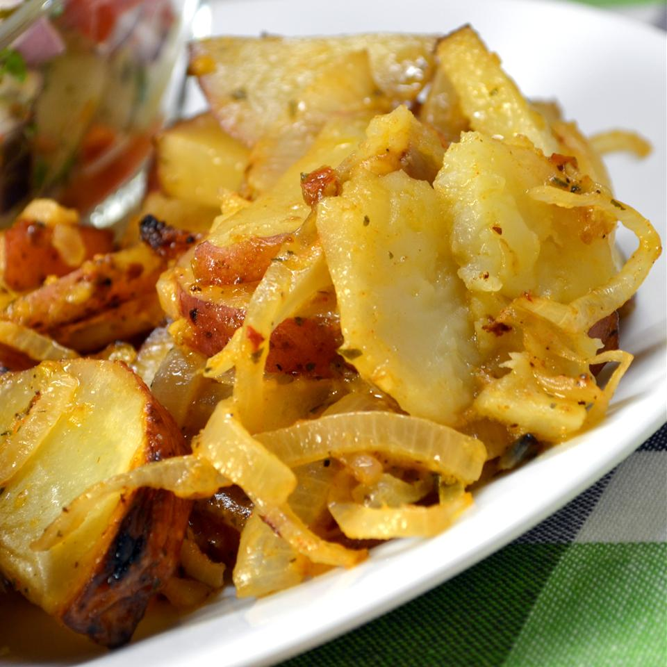

Grilled potatoes and onion

Ingredients
- 4 medium (2-1/4" to 3" dia, raw)s potatoes, sliced
- 1 red onion, sliced
- 1 teaspoon salt
- 1 teaspoon ground black pepper
- 4 tablespoons butter
Instructions
- Preheat grill for medium heat.
- For each packet, measure out 2 or 3 squares of aluminum foil large enough to easily wrap the vegetables,
and layer one on top of the other.
Place some of the potatoes and onion in the center, sprinkle with salt and pepper, and dot with butter.
Wrap into a flattened square, and seal the edges. Repeat with remaining potatoes and onion.
- Place aluminum wrapped package over indirect heat, and cover. Cook for approximately 30 minutes, turning once. Serve hot off the grill.